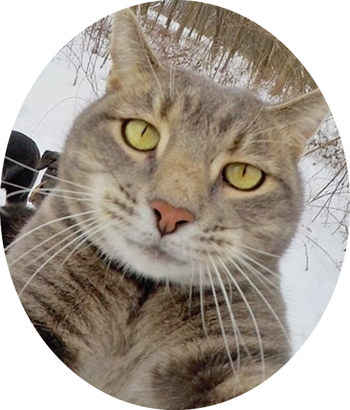
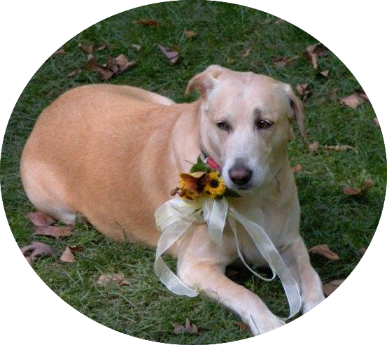

g
Hi! I am an artists, crafter, painter, and much more. I have experience with Computer Graphics, layouts, logos, etc. I also program but not that experience as I want to be. I am organized and can multi-task. Professional and office experience for many many years. I am familiar with Adobe Creative Suites as well as Microsoft products.
This is my first web design course. I feel like I am catching on very quickly with this! It is not as hard as I thought it would be. I am great with multitasking and time management. I am about 1 yr away from obtaining my Marketing degree from LCC. I thought a web design class would be beneficial. So far it is proving to me, that it was a great decision. I also run a cake business, so my attention to detail is top notch. I also like to complete complicated assignments ahead of time. That way there is time to make adjustments if need be.
My strong point is design. I took an interface design class last semester which I enjoyed considerably. I have done a lot of coding as well, but front end is more up my alley.
When it comes to the team project I am very confident in my ability to fulfill any role that is asked of me. I have experience in coding using C++, php, MySQL, Python, and others. I am also very organized in my professional and everyday life. I have being maintaining a website that uses WordPress as it's foundation for the last 3 years. This has given me a lot of insight into how web pages should flow, and how to properly display content. Microsoft paint, is my preferred content creator, but I do have some experience using Adobe Photoshop.
Being a Mom I have serious multitasking skills. I have had some programming classes (python, c#) and enjoy html. I also have worked on some design aspects of a website and have an artful eye. I can usually Google my way through any issue car, internet, computer, health, or life related. I am a self starter and punctual. My crazy schedule does sometimes cause me to have dedicated times I can or cannot work. I've been a 4.0 student since middle school and I'm 38 now.
Designing is my forte. I'm a 3D Artist / Graphic Designer. I have ample experience of a professional setting. I love to design using Adobe Creative Suite, 3D programs, such as Autodesk Maya and Pixologic ZBrush. 3D models, motion graphics, UI/UX design, web-pages, image manipulation, you name it and chances are I've done it. I'm also comfortable writing HTML/CSS codes. I do not wish to undertake responsibilities as a project manager, because my full time job, 19 months old daughter, and family demands around the clock attention.
Jessica Bouvier-July 24th, 2018